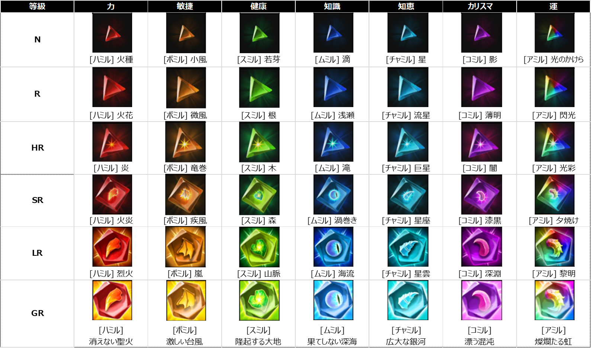
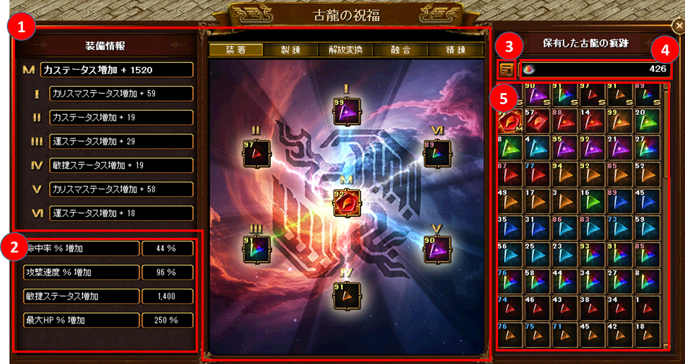
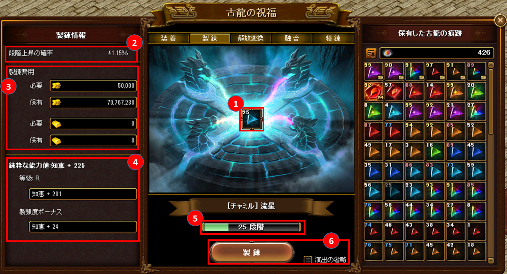
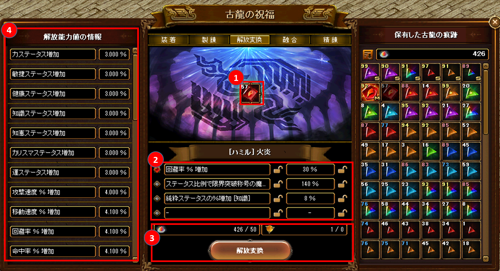
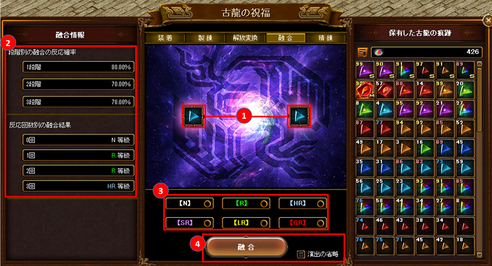
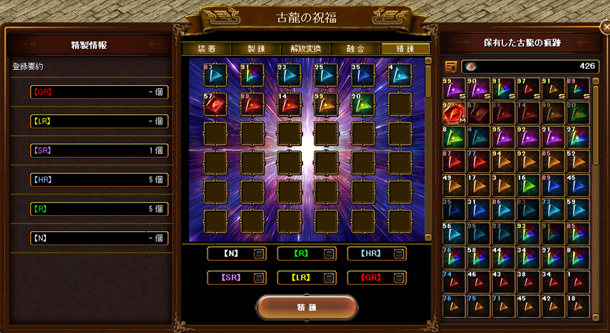

メニュー
トップ >>
アイテム >>
古龍の祝福
装着した古龍の祝福の効果は ペット / 召喚獣にも同様に適用 されます。
2025年10月16日 (ver 0.0865) 実装
基本仕様
古龍の痕跡 (7純粋能力 × 6等級)
関連アイテム (鱗 / 玉 / パウダー / インゴット)
機能① 装着 — メインスロット / サブスロットの仕組み
機能② 製錬 — 1〜100段階で能力値を底上げ
機能③ 解放変換 — 解放能力値の付け替え + 保護
機能④ 融合 — 上位等級を狙う
機能⑤ 精錬 — 不要な痕跡をミルのパウダーに
シミュレータ
■ 純粋能力 (7種)
力 / 敏捷 / 健康 / 知識 / 知恵 / カリスマ / 運
■ 等級 (6段階): N → R → HR → SR → LR → GR
等級が高いほど能力値が大きく、解放能力値の付与数も増えます。
※ 純粋能力値の数値は 等級と製錬度 によって決定。獲得・融合のたびにランダム付与。
※ 解放能力値の数値はランダム生成。「解放変換」で能力値別・等級別に付け替え可能。
※ 解放能力値は獲得・融合・変換時に 重複しない。
■ 7純粋能力 × 6等級 一覧 (公式画像)
縦軸=等級、横軸=純粋能力。各セルに専用名と外見が割り当てられています。
ミルの鱗はイベント・公式ホームページのショップで獲得できます。
装着 UI: 中央の M (メイン) + 周囲の Ⅰ〜Ⅵ (サブ) で最大7個装着
出典: 公式お知らせ「古龍の祝福についてのご案内」(2025年10月16日)
古龍の祝福
新規アイテム 「古龍の痕跡」 を装着してキャラクターの様々な能力値を上昇させるシステム。装着した古龍の祝福の効果は ペット / 召喚獣にも同様に適用 されます。
2025年10月16日 (ver 0.0865) 実装
基本仕様
古龍の痕跡 (7純粋能力 × 6等級)
関連アイテム (鱗 / 玉 / パウダー / インゴット)
機能① 装着 — メインスロット / サブスロットの仕組み
機能② 製錬 — 1〜100段階で能力値を底上げ
機能③ 解放変換 — 解放能力値の付け替え + 保護
機能④ 融合 — 上位等級を狙う
機能⑤ 精錬 — 不要な痕跡をミルのパウダーに
シミュレータ
基本仕様
| UI 起動 | ミニマップ下段の専用アイコンをクリックで「古龍の祝福」UI が開きます |
|---|---|
| 痕跡の最大保有数 | 専用インベントリに 最大 180個 まで保有可能 |
| 装着スロット | 最大 7個 (メインスロット M × 1 + サブスロット Ⅰ〜Ⅵ × 6) |
| 効果の対象 | キャラクター本体 + ペット / 召喚獣 にも適用 |
| 機能タブ | 装着 / 製錬 / 解放変換 / 融合 / 精錬 (5タブ) |
古龍の痕跡 (7純粋能力 × 6等級)
古龍の痕跡は 7種類の純粋能力 ごとに分類され、6つの等級 が存在します。■ 純粋能力 (7種)
力 / 敏捷 / 健康 / 知識 / 知恵 / カリスマ / 運
■ 等級 (6段階): N → R → HR → SR → LR → GR
等級が高いほど能力値が大きく、解放能力値の付与数も増えます。
| 等級 | 解放能力値の付与数 |
|---|---|
| GR | 4つ |
| LR | 4つ |
| SR | 3つ |
| HR | 2つ |
| R | 1つ |
| N | なし |
※ 純粋能力値の数値は 等級と製錬度 によって決定。獲得・融合のたびにランダム付与。
※ 解放能力値の数値はランダム生成。「解放変換」で能力値別・等級別に付け替え可能。
※ 解放能力値は獲得・融合・変換時に 重複しない。
■ 7純粋能力 × 6等級 一覧 (公式画像)

縦軸=等級、横軸=純粋能力。各セルに専用名と外見が割り当てられています。
関連アイテム (鱗 / 玉 / パウダー / インゴット)
| アイテム | 最大ストック数 | 用途・入手 |
|---|---|---|
| 最下級ミルの鱗 | 100個 | 使用すると 古龍の痕跡 をランダムで獲得。等級によって出やすさが異なります。 ※ 取引不可、銀行取引不可、商店販売不可 |
| 下級ミルの鱗 | 100個 | |
| ミルの鱗 | 100個 | |
| ミルの玉 | 999,999,999個 | 「解放変換」 時の保護機能で消費。保護する数量に比例してミルの玉も増加します。 |
| ミルのパウダー | 999個 | 「解放変換」 の主要消費財。「精錬」 で不要な痕跡を分解すると獲得。 |
| 金のインゴット | － | 「製錬」 で GR等級 を扱うときのみ消費される追加コスト。 |
ミルの鱗はイベント・公式ホームページのショップで獲得できます。
機能① 装着 — メインスロット / サブスロットの仕組み

装着 UI: 中央の M (メイン) + 周囲の Ⅰ〜Ⅵ (サブ) で最大7個装着
- 古龍の痕跡は 最大7個 (M + Ⅰ〜Ⅵ) を同時に装着可能
- 純粋能力値は装着した7個分すべてが適用される。ただしサブスロット (Ⅰ〜Ⅵ) は 等級別に一定の比率 でしか適用されない
- 解放能力値は メインスロット (M) に登録した痕跡だけが適用される
- インベントリは等級 / 能力値 / 製錬度で並べ替え可能
- 痕跡を Alt + 右クリック で保護 (鍵アイコン表示)。融合・精錬の誤操作防止用
機能② 製錬 — 1〜100段階で能力値を底上げ

- 製錬度は 1〜100段階。一定の確率でランダムに上昇する
- 等級と現製錬度によって上昇確率が変化 (UIに段階上昇確率が表示される)
- 製錬費用 (ゴールド) は等級別に異なる。金のインゴットは GR 等級の製錬時のみ 追加で消費
- 製錬すると、純粋能力値の数値に 製錬度ボーナス が加算される
- 製錬に失敗しても段階は落ちません。
- 「演出の省略」にチェックすると演出をスキップ可能
機能③ 解放変換 — 解放能力値の付け替え + 保護

- 登録した痕跡の 解放能力値 (オプション) をミルのパウダーを消費して付け替える
- 痕跡の純粋能力に対応した「おススメオプション」は左側に 赤く強調表示 される
- メインスロット (M) に登録すると、すべての解放オプションが表示・確認できる
- 保護機能: 変えたくないオプションを 最大2個 までロック可能。ミルの玉 を消費する
- 数値だけの保護は不可 (オプションごと保護される)
- 変換結果のオプションと能力値の確率は UI で事前確認できる
機能④ 融合 — 上位等級を狙う

- 同一の古龍の痕跡 を登録して融合 (一度に最大 60個まで登録可)
- 融合結果は 3つの灯火 で示され、結果は上位 / 同一 / 下位等級、または破壊
- 段階別の融合反応確率が UI に表示される
- 「演出の省略」で結果のみ即時確認可能
機能⑤ 精錬 — 不要な痕跡をミルのパウダーに

- 古龍の痕跡を登録して精錬を行うと、「ミルのパウダー」 を獲得できる
- 等級別のボタンを押すと、その等級のすべての痕跡を一括登録できる
- ※ 保護設定がされていない痕跡は一括登録に巻き込まれるので要注意。事前に保護を活用する。
シミュレータ
赤石の民衆では、計算機ページに古龍の祝福用のシミュレータを2種用意しています。- 古龍の祝福 製錬 シミュレータ — 製錬の試行回数・期待値を計算
- 古龍の祝福 融合 シミュレータ — 融合の成功確率・結果分布を計算
出典: 公式お知らせ「古龍の祝福についてのご案内」(2025年10月16日)